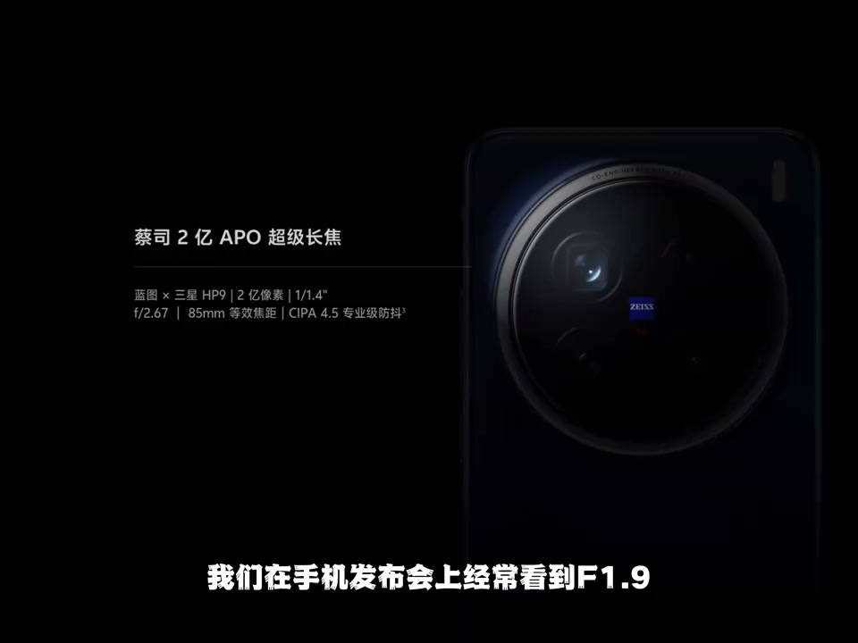
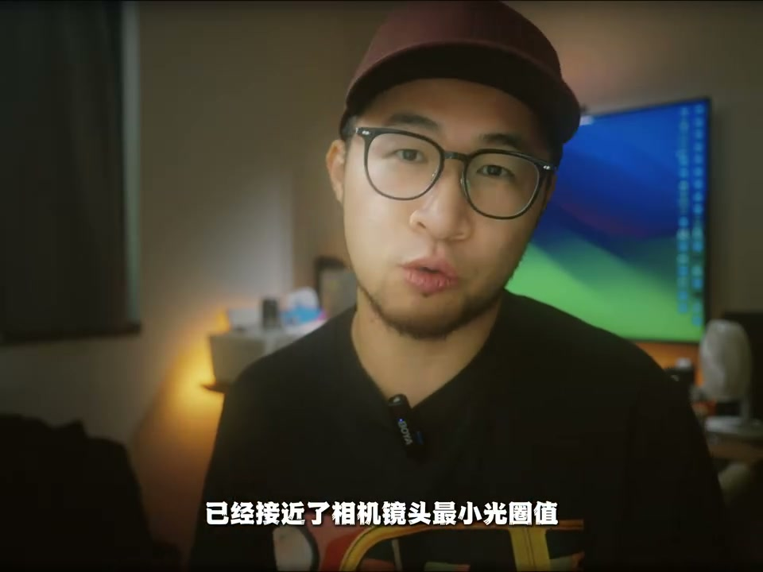
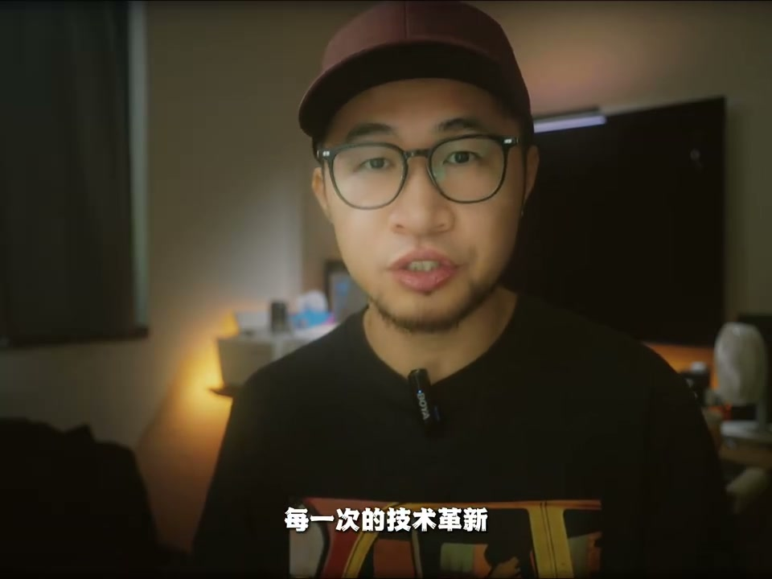

内容要点
这段视频围绕「为什么手机标F1.8光圈，虚化却不如相机？」展开，按时间介绍其中的关键环节。我们在手机发布会上经常看到。
原理说明
我们在手机发布会上经常看到。F1.9、F2.8等大光圈的手机镜头。为什么拍不出相机的虚化感。嗨各位好 我是阿亨。这有一个非常关键的因素。传感器的尺寸。它决定了光线的接受能力和虚化。我们来看一下。这是全画幅尺寸的大小。这是半画幅尺寸的大小

对比与判断
就可以对比出它们的虚化程度。举个例子。iPhone 16 Pro Max那枚长焦镜头。它拥有120焦段。3.1分之1英寸的传感器。F2.8光圈。它的裁切细数来到了7.5。等效全画幅的光圈F21。已经接近了相机镜头最小光圈值。想要拍出刀锐奶化的效果

操作演示
它的等效全画幅光圈竟然达到了F11。即便是85焦段。也比果子上那枚120焦段的长焦。强上不少。毕竟它们的传感器尺寸相差了5.15倍。DAMN 太夸张了。以前我们总说抵达一级压死人。现在单凭光学对了已经不再是唯一答案。夜景算法。HDR融合

总结
它的等效全画幅光圈竟然达到了F11。